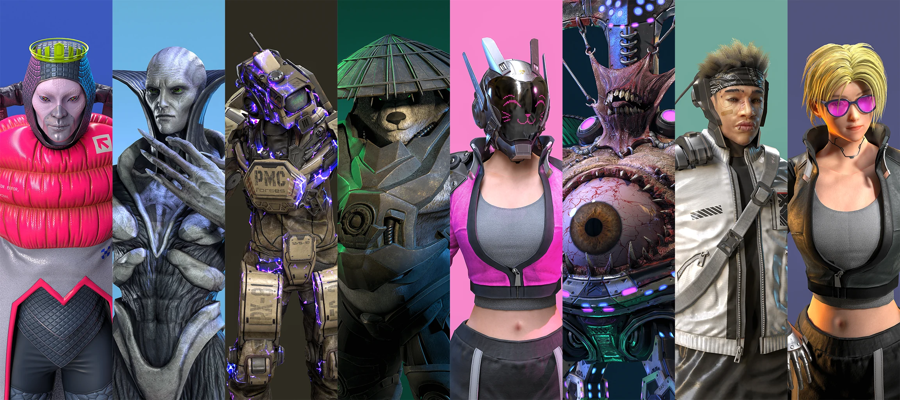
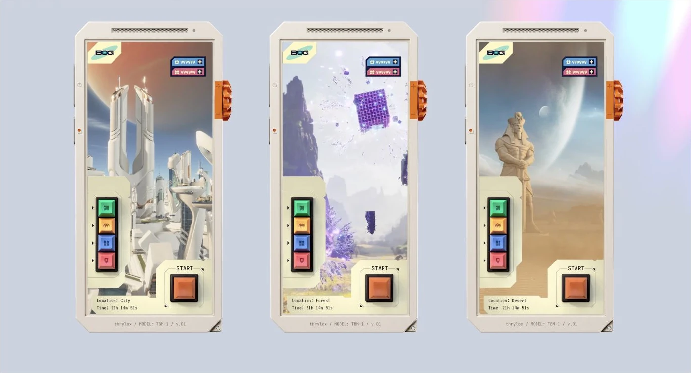
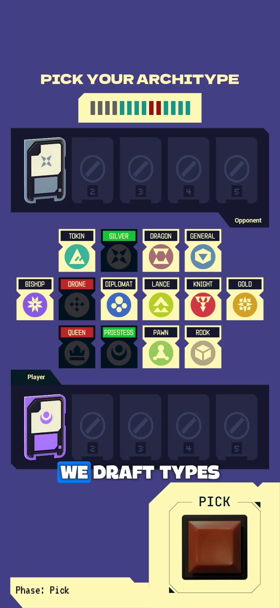
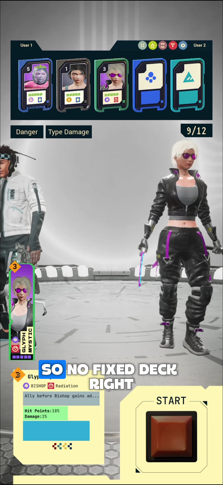
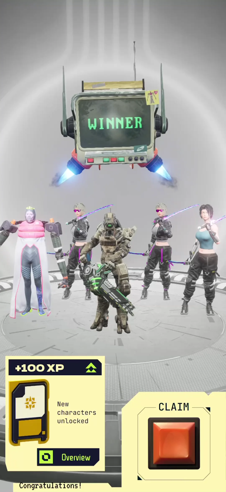
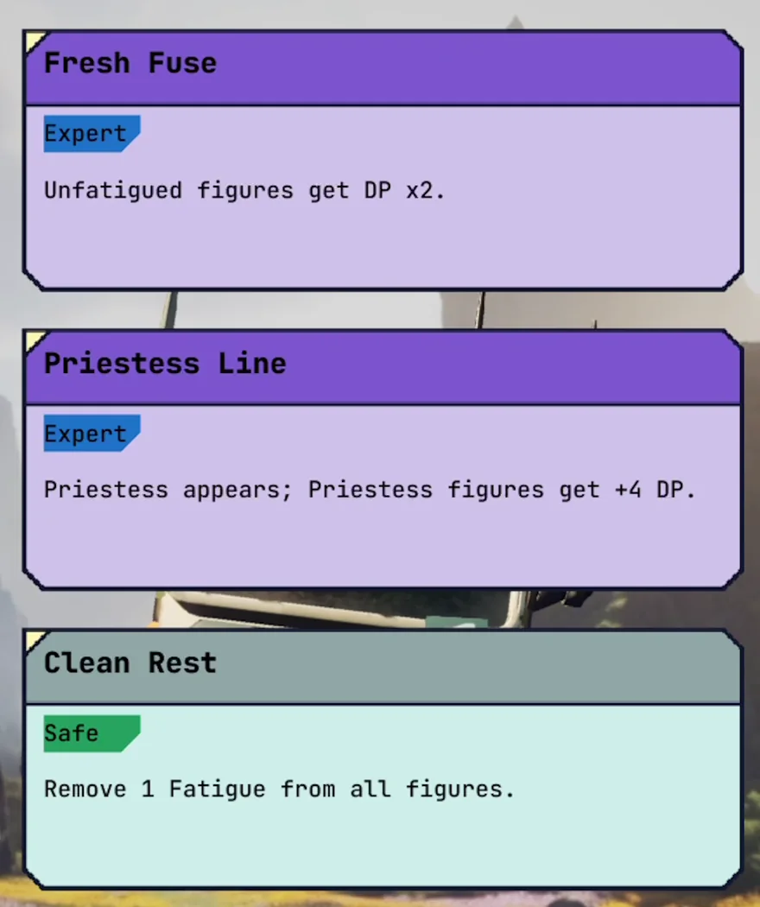
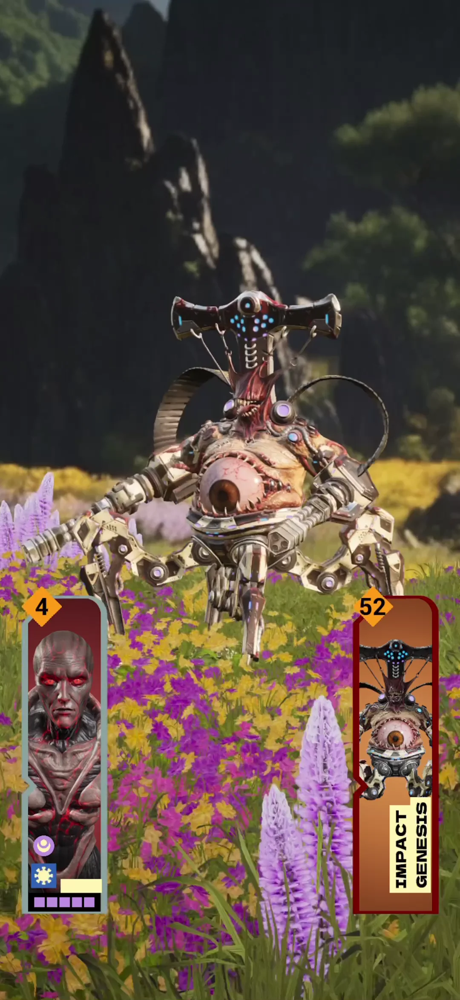
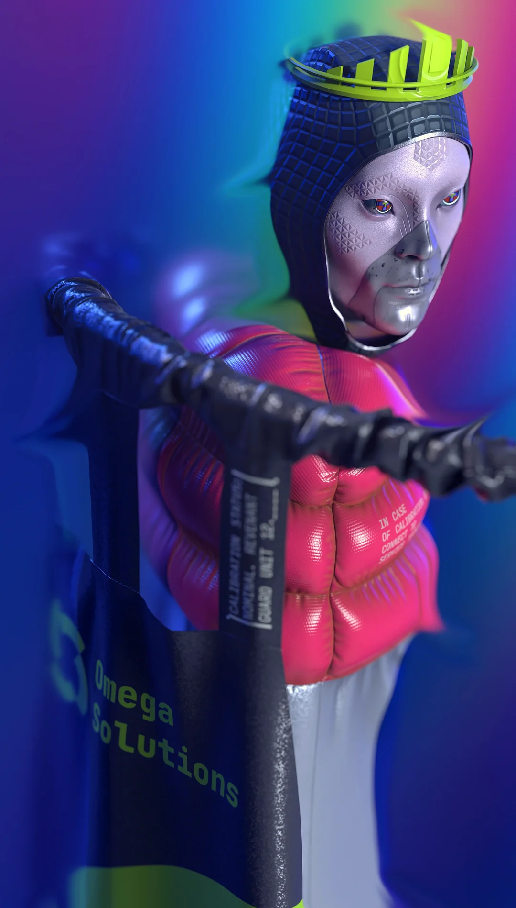

Short duels.
A much bigger world.
BOG is a collectible tactical RPG built around short PvP duels and roguelike PvE runs. You play a Resolver, a professional who settles disputes through duels. Your collection connects competitive play, Anomalies and an expanding science-fiction world.

Why this game
BOG’s world came first. Choosing its gameplay was a commercial decision: Thrylox set out to build a successful game business with sustained revenue. Founder Maksym Palko studied the market through AppMagic and Sensor Tower and examined how leading games connect collecting, combat and progression.
Team Battlers meet Card & Tactical Battlers
Collection is BOG’s commercial foundation. The desire to acquire characters, develop a roster and discover new combinations gives players an ongoing reason to spend. Team Battlers demonstrate the scale of a business built around that motivation. Card battlers, tactical RPGs and roguelikes bring complementary audiences and ways to make the collection valuable in play.
The markets behind BOG’s design
October 2024–September 2025- Team Battler
- $3.3B−14.39% year over year
- Card Battler
- $1.4B+213.12% year over year
- Tactical RPG
- $419.8M+55.79% year over year
- Roguelike (RPG)
- $371.9M+26.20% year over year
Team Battlers remain a $3.3 billion market with an established audience for collecting and developing characters. Thrylox sees the decline as a reason to refresh how those players use their collections. BOG’s opportunity is to give that audience a new experience through short tactical duels and evolving roguelike runs.
A 2022 analysis published by Deconstructor of Fun describes growing similarity between Team Battle RPGs, players tiring of familiar formulas, and integration with other genres as a direction for renewal. Deconstructor of Fun · Genre analysis (opens in a new tab)
Card Battlers add another billion-dollar market for collecting and competitive play. Tactical RPGs and Roguelike RPGs are smaller markets with strong momentum: their revenue grew 55.8% and 26.2%, respectively, over the period above. BOG connects the established appeal of collection with these growing markets for tactical and run-based play.
BOG connects these audiences through one collection: short tactical duels for competitive play, and evolving combinations in Anomalies. Each mode gives players another way to use the figures they collect.
The demo brings the core systems together in a playable build. In the first acquisition test, players explored both duels and Anomalies.
The monetisation model
BOG’s full-game monetisation model offers three product categories: collectible figures, customisation currency and paid battle passes. Players buy figures to expand their collections and the combinations they can explore in duels and Anomalies. Currency is used to customise the Resolver’s ship, including its rooms, interior design and assistant. Paid battle passes are sold alongside these individual purchases. The model connects collecting, progression and personal expression in BOG’s world.
The next stage is production and scale: expand the roster, add new Anomalies, cases and locations, and complete the progression and systems around them. The core is already working. Thrylox is building the full game on that foundation.
A Resolver’s working world
The setting begins after an intellectual revolution. Technology has enlarged what people can do; ownership, status and disagreements remain recognisably human. A Resolver earns a living at the point where those disagreements become cases. Two sides appoint their representatives, and a duel determines the outcome. The collection becomes a set of professional tools, while each assignment gives the encounter a place in the world.
The ship is the player’s base between encounters. In the demo, its map changes the destination and the view through the window: a city, a desert, a mountain meadow. That modest action establishes a useful rhythm—leave, take on an encounter, return somewhere familiar. A developing career, new assignments and a more personal ship are part of the wider design.

Straight into the duel
BOG brings team selection into the match. Players pick and ban figure types, then secretly assemble a line-up from the eligible figures in their collection. There is no pre-built deck to prepare before the first match or rebuild after a break. New and returning players can focus on the encounter in front of them: reading the opponent, choosing combinations and deciding their order.
The current rules require exactly 12 Danger Points across the line-up. A distribution of 5–4–1–1–1 puts much of that budget into two figures. A 3–3–3–2–1 arrangement spreads it out. Both are legal. Their value depends on the opposing types, the order of the encounters and what the figures do for one another.
Buying figures expands the choices available for your drafted types and their combinations, while every duel line-up must still total exactly 12 Danger Points.



Priestess offers a clear example. The next pairing inherits her outcome: a win carries forward as a win, and a loss as a loss. Put a low-Danger figure immediately after her and that position can win against a much stronger figure. The wager is concentrated in the Priestess encounter. Moving her, changing the figure before or after her, or anticipating the opponent’s response changes the plan.
This video could not load.
Open the video fileOnce the line-ups are committed, combat resolves automatically. The first side to win three pairings takes the match. The player watches the consequences of the choices already made. A larger collection supplies more variants within the drafted types, creating new answers to that preparation problem.
These are the rules of BOG’s competitive design. The current demo lets players try the duel system against bots; online PvP is not enabled in that build.
Build an engine as you go
Anomalies take the collection into a run against the game. In the demo’s five-encounter run, each encounter deals a set of types from which the player forms a line-up. Figures used in a won encounter accumulate fatigue for the rest of the run, reducing their Danger. A figure saved earlier may become the stronger option later. After each of the first four wins, the player chooses one of three upgrades.
That makes two kinds of preparation matter. The collection determines which figures are available when a type is dealt. The upgrades chosen during this particular run change what those figures can accomplish together. The PvP budget of 12 does not apply here: the challenge is to build enough strength and useful interactions as the run becomes more demanding.


One upgrade shown here, Fresh Fuse, doubles the Danger of figures with no fatigue. Taking it changes the next selection: a figure held in reserve may now contribute more than one already used. Other combinations can make the supply itself more reliable. Gold Line guarantees a Gold type in future deals and strengthens it; Crown Mirror doubles the Danger of guaranteed types. Each choice helps build an engine whose parts depend on one another.
The team recalls how composer Deniel Pavlovskiy had to learn to complete an Anomaly to hear and check the music across its stages. That is the experience the mode is built around: understanding how the pieces work together changes how far a run can go. Future Anomalies are intended to vary in length and structure; the five-encounter demo is the first example.
Where BOG sits
The useful comparison is a combination of familiar experiences. RAID provides a reference for building a character roster; Marvel Snap and Clash Royale for compact competitive matches; Honkai: Star Rail for a collection embedded in a developed fictional world. BOG connects its draft, collection and run-building to the working life of a Resolver.
- Short-Session PvPBOG 5RAID 3Marvel Snap 5Clash Royale 5Honkai: Star Rail 1
- Ease of EntryBOG 5RAID 3Marvel Snap 4Clash Royale 4Honkai: Star Rail 4
- Collection & ProgressionBOG 4RAID 5Marvel Snap 4Clash Royale 4Honkai: Star Rail 5
- Roguelike Engine-BuildingBOG 5RAID 3Marvel Snap 1Clash Royale 3Honkai: Star Rail 5
- World & Self-ExpressionBOG 4RAID 3Marvel Snap 2Clash Royale 2Honkai: Star Rail 5
- Product-Native Organic GrowthBOG 5RAID 2Marvel Snap 4Clash Royale 3Honkai: Star Rail 3
- Built-in Audience / IPBOG 1RAID 2Marvel Snap 5Clash Royale 4Honkai: Star Rail 4
View all scores
| Design emphasis | RAID | Marvel Snap | Clash Royale | Honkai: Star Rail | BOGIntended design |
|---|---|---|---|---|---|
| Short-Session PvP | 3 out of 5 | 5 out of 5 | 5 out of 5 | 1 out of 5 | 5 out of 5 |
| Ease of Entry | 3 out of 5 | 4 out of 5 | 4 out of 5 | 4 out of 5 | 5 out of 5 |
| Collection & Progression | 5 out of 5 | 4 out of 5 | 4 out of 5 | 5 out of 5 | 4 out of 5 |
| Roguelike Engine-Building | 3 out of 5 | 1 out of 5 | 3 out of 5 | 5 out of 5 | 5 out of 5 |
| World & Self-Expression | 3 out of 5 | 2 out of 5 | 2 out of 5 | 5 out of 5 | 4 out of 5 |
| Product-Native Organic Growth | 2 out of 5 | 4 out of 5 | 3 out of 5 | 3 out of 5 | 5 out of 5 |
| Built-in Audience / IP | 2 out of 5 | 5 out of 5 | 4 out of 5 | 4 out of 5 | 1 out of 5 |
Higher scores mean greater emphasis in Thrylox’s positioning, not measured superiority. The growth scores describe product intent, not acquisition results. Source: Thrylox’s September 2026 pitch comparison.
Game references: RAID (opens in a new tab) · Marvel Snap (opens in a new tab) · Clash Royale (opens in a new tab) · Honkai: Star Rail (opens in a new tab).
The team’s positioning also exposes a starting disadvantage: BOG is a new setting with an audience still to build. Its planned social features have to earn their place through use.
Growth built into the game
Collecting and progression can give an existing player reasons to return. Thrylox is also designing two ways for play to create a reason to introduce BOG to somebody else. Both are planned features beyond the current demo.
Figures inspired by the world outside
An event, a public personality, a place or a curious moment in contemporary life can become the starting point for a figure. BOG would reinterpret that inspiration through its own world and give the figure a role in play. Recognition starts the conversation; the ability and the combinations give players something further to discuss.

- A recognisable referenceAn event, person, place or phenomenon.
- A figure with a roleReinterpreted in BOG, with a purpose in play.
- A reason to show someoneRecognition opens a conversation about the game.
This connects a content update to a conversation people are already having. Someone recognises the reference, shows the figure to a friend and has a reason to explain what it does.
Bring your own case
The case-submission feature begins with a small disagreement: which film should a group watch tonight? Someone who knows BOG suggests settling it through the game. The system translates the disagreement into a case in BOG’s world, where a duel supplies a result for the two sides.
- “Which film tonight?”A small disagreement within a group.
- A case in BOG’s worldThe dispute is translated into the game’s fiction.
- A duel and an outcomeThe result resolves the choice for the group.
The person introducing it has a concrete story to tell and a reason for the others to care about the outcome. That is the proposed route from a social situation to discovery.
A world that can keep unfolding
The wider content plan begins with local work in the first release. Beyond it, the setting has room for different ways of living: corporate cities, independent communities and places where competing interests produce different kinds of cases. A new location can bring its own people, figures and encounters, gradually changing the scale of the Resolver’s work.
A benevolent global AI is part of the fictional foundation of that world. Its role, and the choices people make within the society it supports, can emerge through later stories. The longer horizon includes the possibility of an exodus, but the immediate creative task is to make the places and people worth knowing first.
Play BOG
The iOS demo brings together the ship hub, collection, bot duels and an Anomaly run. It offers a way to test the decisions described here: draft types, arrange figures, then try building a combination across encounters. The fuller onboarding and progression experience is still in production.
The September gameplay overview
The September gameplay overview shows that playable foundation. BOG is built in Unreal Engine; its depth-aware scene technology lets real 3D figures move into and behind details in a scene represented by a texture. On a phone, the result is visible in the relationship between a moving figure and the environment around it.
This video could not load.
Open the video fileTry the demo to explore the game. For a closer discussion of the product, the next stage and the investment, book a conversation with Thrylox.